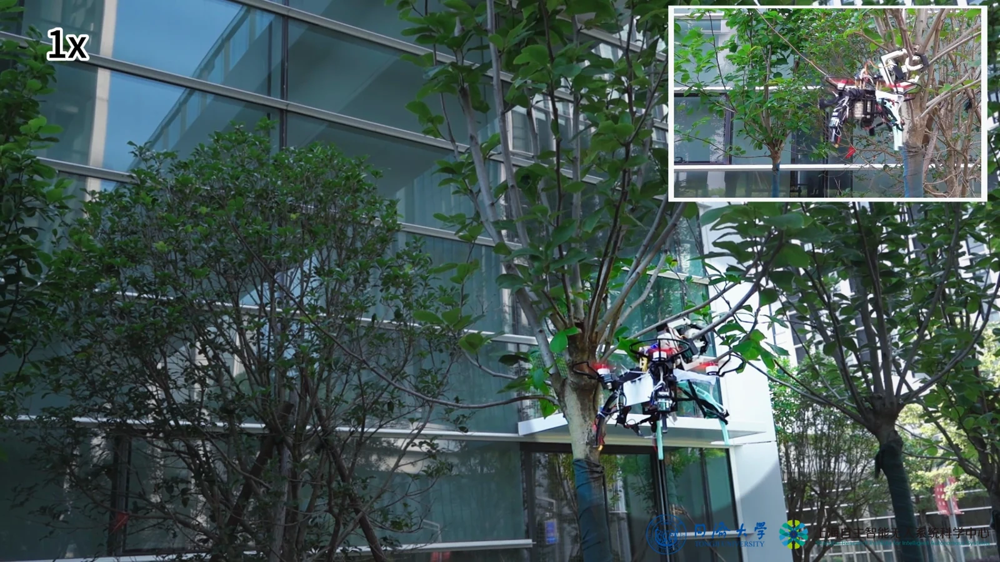

RESEARCH / 01
Aerial interaction & morphological intelligence
空中物理交互与形态智能
把结构的力学特性融入机器人能力，研究接触、抓取与对接过程中的快速响应和飞行稳定性。

我们研究机器人如何通过结构、感知与控制的协同设计，在复杂环境中可靠地接触、抓取、对接和驻留。以空中物理交互为核心，探索形态智能与自主作业，让无人机成为能够与物理世界持续交互的具身系统。
我们研究机器人如何通过结构、感知与控制的协同设计，在复杂环境中可靠地接触、抓取、对接和驻留。以空中物理交互为核心，探索形态智能与自主作业，让无人机成为能够与物理世界持续交互的具身系统。
关注真实环境中的机器人能力，
连接机构、感知、控制与系统。
Aerial interaction & morphological intelligence
把结构的力学特性融入机器人能力，研究接触、抓取与对接过程中的快速响应和飞行稳定性。
Perching & sustained observation
利用树枝、杆件及空间结构支撑无人机，研究从飞行到停歇、驻留监测与再起飞的完整过程。
Variable stiffness & reconfigurable robotics
通过双稳态、阻塞与柔顺机构调节形态和力学性能，让机器人适应不同任务与接触条件。
Multimodal perception & autonomous control
结合视觉、触觉与运动状态信息，研究交互过程中的状态判断、感知重构与闭环控制。

以碰撞触发快速抓持，结合柔顺缓冲与被动锁定，探索无人机在杆件和天然树枝上的快速停歇。
73(2): 2554–2563
11(10): 12216–12223
21(5): 056004
663: 132014
48(3): 3726–3743
13(51): e76527
10289–10294
29(2): 984–994
19: 056017
33(5): 055002
9335–9341
4(5): 101365
11: 1152412
20(6): 2661–2669
43–48
18(2): e2372
93(11): 115007
6(3): 5697–5704
4969–4974
2375–2389
15(2): 026002
6(1): 118–32
285: 700–11
394–399
331–336
817–822
实验、验证，以及那些向前的一小步。